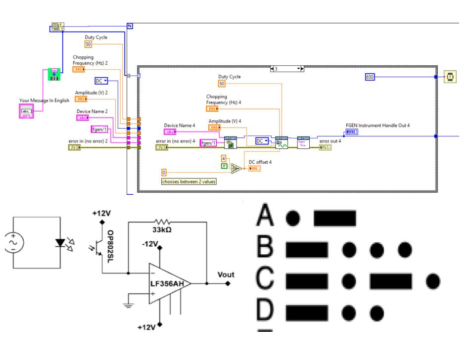
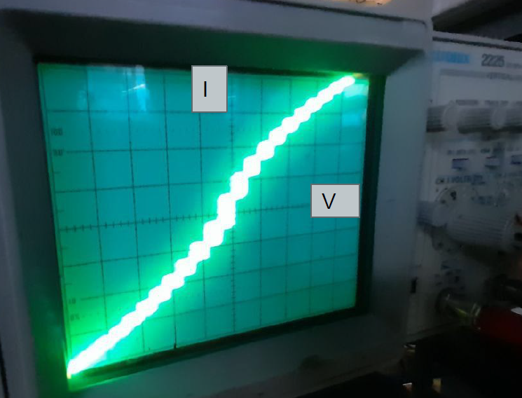
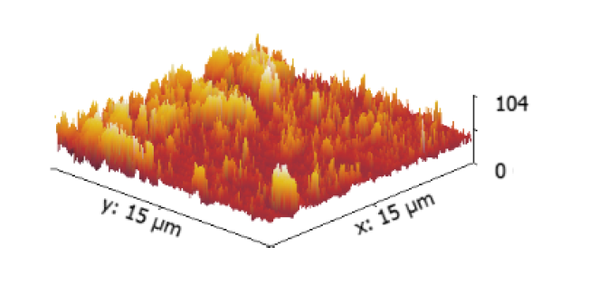
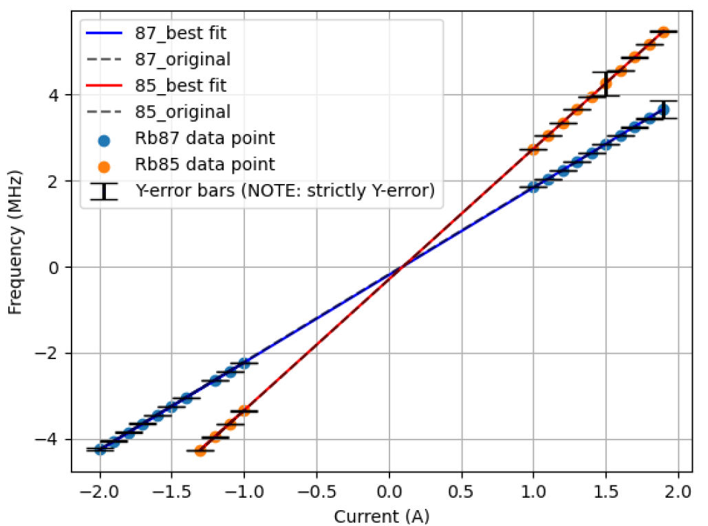
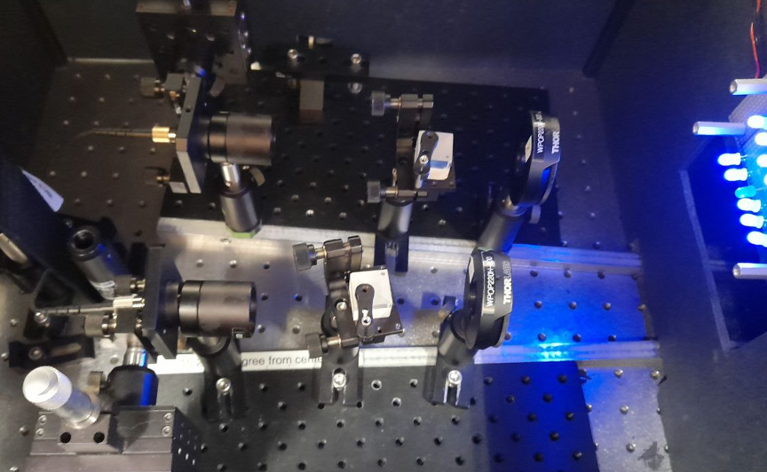
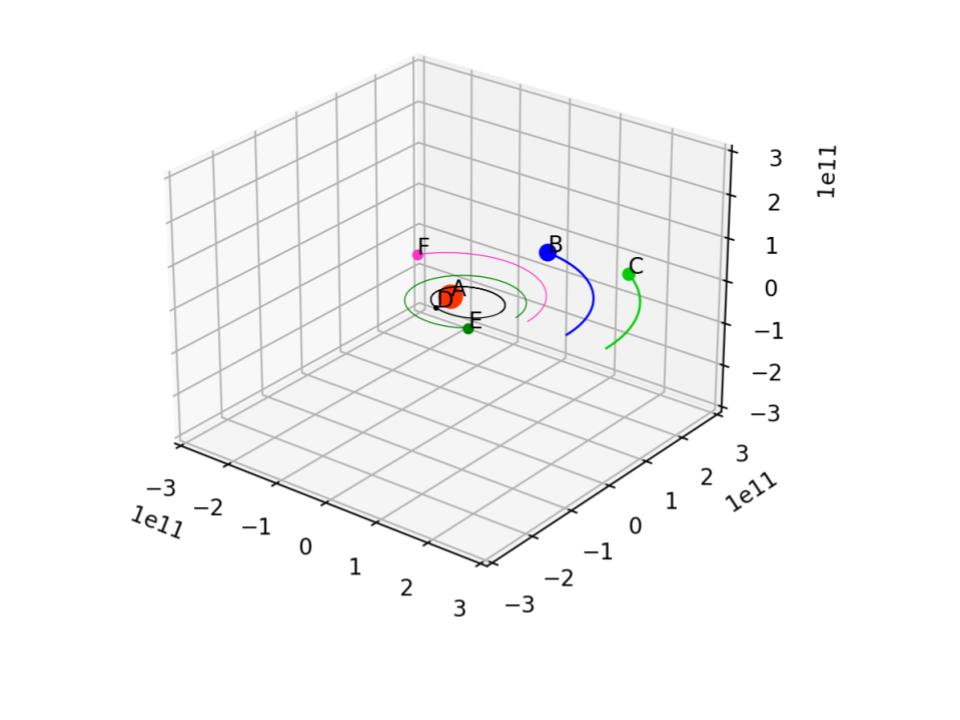

Researches and Projects
Analyzing the Uranus’ Rings (Research at UCB @ Imke's group)

Currently I am working with professor Imke de Pater's team at UCB on analyzing the data obtained from Keck observatory. I am intrested in Uranus' rings system. I hope to publish my research results in an academic journal next year.
DetailsPoster
LabView Programming: Morse code project!
Created a circuit with many subvi's to transmit morse code using an LED.
DetailsPython The AC/DC The Josephson Junction Effect
Superconducting phenomena are among the most fascinating features in physics, and the Josephson effect is the most interesting of all. In 1962, Brian Josephson predicted that electron pairs could tunnel without resistance through an insulating barrier between two superconductors. Here we use a point contact between niobium wire with a thin oxide layer and a niobium block. Both the DC and AC Josephson effects are observed and measured. A DC current can flow through the junction with no potential difference, but when a DC voltage is applied together with a small alternating voltage, the I-V curve shows a characteristic step structure. From this step structure, the value of 2e/h can be calculated easily and accurately, an exciting consequence of the properties of the junction. The ratio e/h appears throughout atomic and condensed matter physics. (Cited from 111B Website)
DetailsAtomic Force Microscopy (AFM)
During our experimental work, we utilized a commercially available AFM unit and conducted five distinct experiments. Initially, we focused on acquiring a deep understanding of the AFM microscope and the various factors that influence its functioning. We carefully examined both internal and environmental sources of noise and how they impact the accuracy of the instrument. Following this, we shifted our focus to scanning optical disks and employed the AFM to accurately measure the pit depths of these disks, achieving a remarkable 20 percent accuracy rate. We also utilized the phase drive scan technique to analyze the structure of a polymer sample in detail, further refining our understanding of the AFM’s capabilities. Finally, we delved into the F-D curve experiment and utilized it to estimate the Boltzmann constant with remarkable precision, achieving a difference of merely 1 percent from the accepted value. Through our efforts, we have gained a deeper appreciation for the versatile capabilities of AFM units and the significant contribution they can make to scientific research.
DetailsRubidium Optical Pumping
This lab report aimed to investigate and calculate various parameters related to Rubidium atoms, including the ambient magnetic field, and nuclear spin values. Through data analysis and calculations, the ambient field for Rb87 was found to be (-0.4282 ± 0.004)G and for Rb85 to be (-0.4352 ± 0.006)G, which matches well with the accepted range for the value of the earth’s magnetic field. The nuclear spin values for Rb85 and Rb87 were determined to be 2.539 ± 0.004 and 1.532 ± 0.006, respectively, which closely resemble the perfect ratios of 5/2 and 3/2. Finally, the optical pumping phenomenon was explained, with Rubidium’s electron configuration and our tools. These results demonstrate the success of the experimental measurements and calculations in accurately determining important parameters of Rubidium atoms. Throughout this experiment, we have acquired a wealth of knowledge in several areas of physics, particularly in the field of quantum mechanics. Our observations have allowed us to directly witness the existence and behavior of quantum mechanics in action.
DetailsQuantum Interference Entanglement
Entanglement has been one of the most counterintuitive phenomena discovered in nature! The idea was first introduced into physics by the famous trio: Einstein, Podolsky, and Rosen (the name EPR comes from here!). It was a striking non-classical result of quantum mechanics! The idea is simple enough, yet hard to believe! Hence many theories and ideas were developed against this phenomenon. As Einstein described it as “spooky action at a distance!”. Hence in 1935, the three good friends Einstein, Podolsky, and Rosen in an attempt against quantum mechanics developed and formed a theory in which they claimed that there are some missing and unconsidered variables in this quantum mechanics that arise from these counterintuitive properties in nature. Eventually, they published a paper which is now goes by the name of “Hidden variable theory” or from now on HVT for short! In 1964 John Bell showed that the “locality hypothesis” with HVT leads to a conflict with quantum mechanics. He postulated a mathematical theorem consisting of specific inequalities. The observation of a violation of these inequalities through experimentation would indicate the existence of nonlocality in states that are in favor of quantum mechanics and against the HVT! In this experiment, we went through the same procedure.
DetailsPython Decal Project: 3D Simulation of HD 23472 planetary system
Leading a team of 6, we have created A 3D interactive simulation of HD 23472 planetary system using Python!
Details